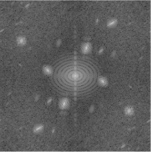

Overview Of Empirical Wavelets Transforms
Multi-resolution analysis tools have shown to be useful for a variety of applications in signal and image processing.
From compression and denoising/deconvolution to machine learning features, these methods have been continuously improved upon for decades.
As applications have gotten more problem-specific and granular, adaptive methods such as the empirical mode decomposition (EMD) have become quite popular.
However, the EMD is inherently algorithmic, and has various problems.
As such, the empirical wavelet transform (EWT) an mathematically robust approach, was proposed among others to offer an alternative.
Empirical wavelet transforms are an adaptive extension to wavelet transforms. Wavelet transforms often have a diadic decomposition, and can be seen as having a prescriptive partitioning of the Fourier domain.
From this partitioning, they extract specific scales and orientations. The empirical wavelet transform instead detects where the scales and orientations are and partitions the Fourier domain appropriately.
The EWT then constructs filters based on wavelet construction of filters.
My research is currently focused on 2D empirical wavelet transforms. Specifically, I have been interested on the development of new empirical wavelet transforms and on the imaging applications of existing ones.
Links:
Empirical Watershed Wavelets Transforms
As mentioned, one of the my primary research interests is in the development of new empirical wavelet transforms. As a reminder, empirical wavelet transforms adaptively partition the Fourier spectrum based on the image they are operating on.
In earlier work with the empirical wavelet transform, however, the shape that the partitioning could take was limited by its construction. As such, during my masters thesis I sought to propose a method of defining an empirical wavelet transform from an arbitrary partitioning of the 2D Fourier spectrum.
With this definition, we have much more flexibility for detecting and defining our partitioning.
As part of my work, I proposed a method for detecting an appropriate partition by breaking the process down to two steps.
First, we detect the AM-FM modes present in the spectrum represented by peaks. This is done by defining meaningful (or persistent) maxima through a scale-space representation of the image's spectrum.
Then, one defines a partitioning of the spectrum using the watershed transform to separate these modes as much as possible. Details can be found in my thesis, seen here:

Magnitude Spectrum of Image
Links:
Since the publication of this work, I have extended the empirical watershed wavelet transform into 3D.
Also, for applications where an orientation invariance is necessary, the EWWT's algorithm can be adjusted to get a orientation pseudo-invariant result where the watershed transform detects partitionings based on circles whose radii correspond to dominant scales.